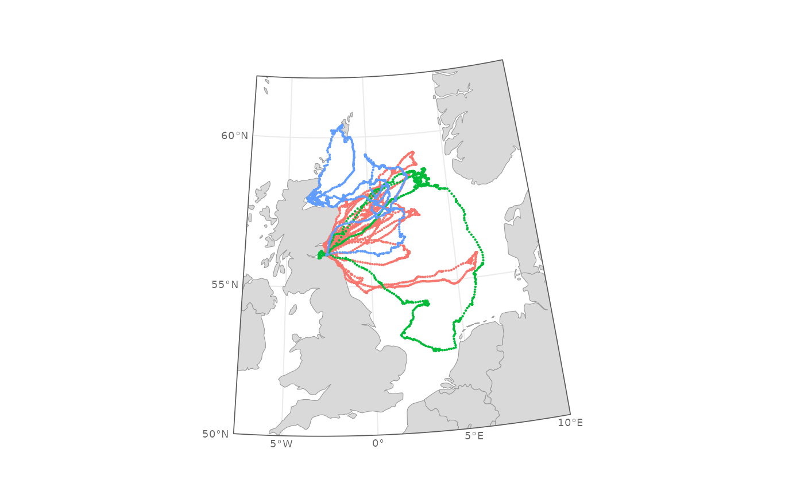

Returns the pieces that are fiddly to work out by hand, so that you can
write the rest of the map as an ordinary ggplot() call:
Usage
make_map_furniture(
xmin,
xmax,
ymin,
ymax,
crs,
buffer = 5e+05,
lat_by = 10,
lon_by = 20,
densify = 1
)Arguments
- xmin, xmax, ymin, ymax
Numeric. Map extent in WGS84 decimal degrees.
xminmust be less thanxmax; boxes crossing the antimeridian are not supported.- crs
Target projection, as anything
sf::st_transform()accepts: an EPSG code or a PROJ string. Should be projected, with metres as its unit, and the same projection you use formapr()andggplot2::coord_sf().- buffer
Numeric. Margin around the frame on all sides, in metres. This is the white space the graticule labels are written into, so it needs to be wide enough to hold them. Defaults to 500000 (500 km), which suits an ocean basin; for a North Sea map around 200000 works well.
- lat_by, lon_by
Numeric. Spacing of the graticules and their labels in degrees. Positions snap to multiples of these values falling inside the extent, so
lat_by = 5on a 50 to 62 degree extent gives 50, 55 and 60.- densify
Numeric. Maximum segment length in degrees used when densifying the bounding box, passed to
sf::st_segmentize(). Smaller values give smoother curved edges at the cost of more vertices.
Value
A named list with components:
- flyway_wgs84
sfcpolygon of the densified frame in EPSG:4326.- flyway
The same polygon transformed to
crs. Draw it withfill = NAfor a border around the map.- cookie
sfcpolygon covering the buffered frame with the map extent punched out. Draw it filled white, after your data layers and before the labels.- parallels
sfpoints along the western edge, with columnslat,lonandlabel. Passlattoggplot2::scale_y_continuous()asbreaksto draw matching graticules.- meridians
sfpoints along the southern edge, with columnslat,lonandlabel. Passlontoggplot2::scale_x_continuous()asbreaksto draw matching graticules.- xlim, ylim
Length-2 numeric vectors in CRS units, for
ggplot2::coord_sf().
Details
a cookie-cutter mask, a rectangle with your map extent punched out of it. Drawn in white over the top of your data layers, it hides anything spilling past the edge of the map and leaves a clean margin.
graticule positions and labels along the western and southern edges, already formatted as
"55\u00b0N","5\u00b0W"and so on.plot limits in projected units, ready to pass straight to
ggplot2::coord_sf().
The bounding box is densified in geographic coordinates before projection, so the edges of the map follow the curved graticules rather than straight lines in the target projection.
Use it alongside mapr(), which supplies the land. The land needs to reach
past the frame on every side, since the cookie hides anything beyond it.
See vignette("mapr") for a step-by-step guide to building a map.
Examples
prj <- "+proj=utm +zone=30 +datum=WGS84 +units=m +no_defs"
mf <- make_map_furniture(
xmin = -7.5, xmax = 10, ymin = 50, ymax = 62,
crs = prj,
buffer = 200000,
lat_by = 5,
lon_by = 5
)
# Plot limits, in metres, because the projection is in metres
mf$xlim
#> [1] -22444.32 1630226.78
# The graticule labels
mf$parallels$label
#> [1] "50°N" "55°N" "60°N"
mf$meridians$label
#> [1] "5°W" "0°" "5°E" "10°E"
# \donttest{
library(sf)
#> Linking to GEOS 3.12.1, GDAL 3.8.4, PROJ 9.4.0; sf_use_s2() is TRUE
library(ggplot2)
data(gannets)
gannets_sf <- st_as_sf(gannets, coords = c("lon", "lat"), crs = 4326)
land <- mapr(gannets, prj, buff = 400000)
#> although coordinates are longitude/latitude, st_intersection assumes that they
#> are planar
# Layer order matters: land and data, then the cookie, then the frame,
# then the labels
ggplot() +
theme_minimal(base_size = 8) +
geom_sf(data = land, fill = "grey85", colour = "grey60", linewidth = 0.2) +
geom_sf(data = gannets_sf, aes(colour = id), size = 0.1,
show.legend = FALSE) +
geom_sf(data = mf$cookie, fill = "white", colour = NA) +
geom_sf(data = mf$flyway, fill = NA, linewidth = 0.3) +
scale_x_continuous(breaks = mf$meridians$lon) +
scale_y_continuous(breaks = mf$parallels$lat) +
coord_sf(xlim = mf$xlim, ylim = mf$ylim, crs = prj, expand = FALSE) +
theme(axis.text = element_blank(),
axis.title = element_blank()) +
geom_sf_text(data = mf$parallels, aes(label = label),
size = 2.5, colour = "grey40",
nudge_x = -15000, hjust = 1) +
geom_sf_text(data = mf$meridians, aes(label = label),
size = 2.5, colour = "grey40",
nudge_y = -15000, vjust = 1)

# }